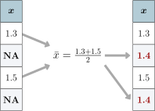
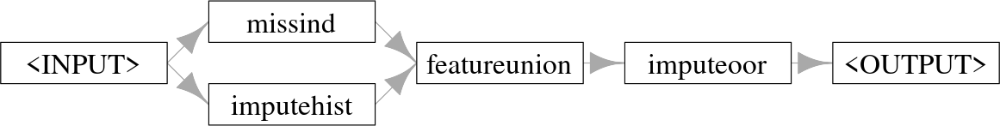
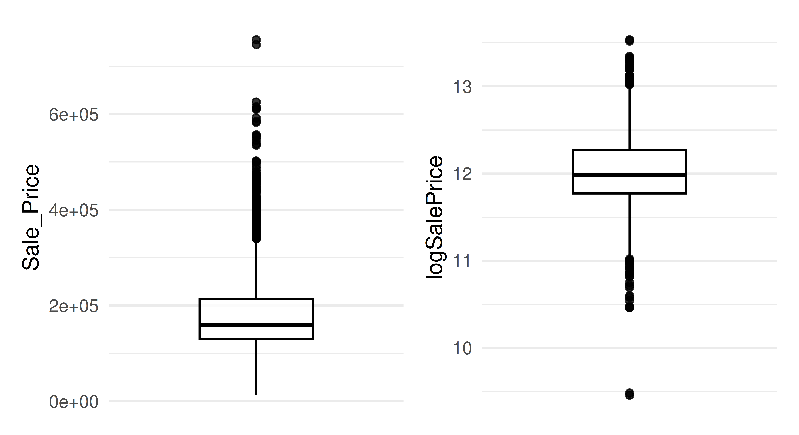
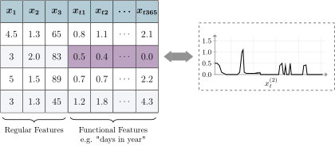
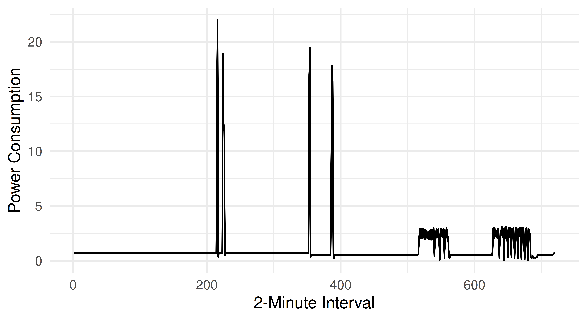

ames = mlr3data::ames_housing9 Preprocessing
Janek Thomas
Ludwig-Maximilians-Universität München, and Munich Center for Machine Learning (MCML), and Essential Data Science Training GmbH
Chapter 7 and Chapter 8 provided a technical introduction to mlr3pipelines, this chapter will now demonstrate how to use those pipelines to tackle common problems when preprocessing data for ML, including factor encoding, imputation of missing values, feature and target transformations, and functional feature extraction. Feature selection, an important preprocessing method, is covered in Chapter 6.
In this book, preprocessing refers to everything that happens with data before it is used to fit a model, while postprocessing encompasses everything that occurs with predictions after the model is fitted.
Data cleaning is an important part of preprocessing that involves the removal of errors, noise, and redundancy in the data; we only consider data cleaning very briefly as it is usually performed outside of mlr3 on the raw dataset.
Data Cleaning
Another aspect of preprocessing is feature engineering, which covers all other transformations of data before it is fed to the machine learning model, including the creation of features from possibly unstructured data, such as written text, sequences or images. The goal of feature engineering is to enable the data to be handled by a given learner, and/or to further improve predictive performance. It is important to note that feature engineering helps mostly for simpler algorithms, while highly complex models usually gain less from it and require little data preparation to be trained. Common difficulties in data that can be solved with feature engineering include features with skewed distributions, high cardinality categorical features, missing observations, high dimensionality and imbalanced classes in classification tasks. Deep learning has shown promising results in automating feature engineering, however, its effectiveness depends on the complexity and nature of the data being processed, as well as the specific problem being addressed. Typically it can work well with natural language processing and computer vision problems, while for standard tabular data, tree-based ensembles such as a random forest or gradient boosting are often still superior (and easier to handle). However, tabular deep learning approaches are currently catching up quickly. Hence, manual feature engineering is still often required but with mlr3pipelines, which can simplify the process as much as possible.
Feature Engineering
As we work through this chapter we will use an adapted version of the Ames housing data (De Cock 2011). We changed the data slightly and introduced some additional (artificial) problems to showcase as many aspects of preprocessing as possible on a single dataset. The modified version is shipped with mlr3data and the code to recreate this version of the data from the original raw data can be found at https://github.com/mlr-org/mlr3data/ in the directory data-raw. This original dataset was collected as an alternative to the Boston Housing data and is commonly used to demonstrate feature engineering in ML. Raw and processed versions of the data can be directly loaded from the AmesHousing package. The dataset includes 2,930 residential properties (rows) situated in Ames, Iowa, sold between 2006 and 2010. It contains 81 features about various aspects of the property, the size and shape of the lot, and information about its condition and quality. The prediction target is the sale price in USD, hence it is a regression task.
9.1 Data Cleaning
As a first step, we explore the data and look for simple problems such as constant or duplicated features. This can be done quite efficiently with a package like DataExplorer or skimr which can be used to create a large number of informative plots.
Below we summarize the most important findings for data cleaning, but we only consider this aspect in a cursory manner:
# 1. `Misc_Feature_2` is a factor with only a single level `Othr`.
summary(ames$Misc_Feature_2)Othr
2930 # 2. `Condition_2` and `Condition_3` are identical.
identical(ames$Condition_2, ames$Condition_3)[1] TRUE# 3. `Lot_Area` and `Lot_Area_m2` are same data on different scales
cor(ames$Lot_Area, ames$Lot_Area_m2)[1] 1For all three problems, simply removing the problematic features (or feature in a pair) might be the best course of action.
to_remove = c("Lot_Area_m2", "Condition_3", "Misc_Feature_2")Other typical problems that should be checked are:
- ID columns, i.e., columns that are unique for every observation should be removed or tagged.
-
NAs not correctly encoded, e.g. as"NA"or"" - Semantic errors in the data, e.g., negative
Lot_Area - Numeric features encoded as categorical for learners that can not handle such features.
Before we continue with feature engineering we will create a task, measure, and resampling strategy to use throughout the chapter.
tsk_ames = as_task_regr(ames, target = "Sale_Price", id = "ames")
# remove problematic features
tsk_ames$select(setdiff(tsk_ames$feature_names, to_remove))
msr_mae = msr("regr.mae")
rsmp_cv3 = rsmp("cv", folds = 3)
rsmp_cv3$instantiate(tsk_ames)Lastly, we run a very simple experiment to verify our setup works as expected with a simple featureless baseline, note below we set robust = TRUE to always predict the median sale price as opposed to the mean.
lrn_baseline = lrn("regr.featureless", robust = TRUE)
lrn_baseline$id = "Baseline"
rr_baseline = resample(tsk_ames, lrn_baseline, rsmp_cv3)
rr_baseline$aggregate(msr_mae)regr.mae
56056 9.2 Factor Encoding
Many machine learning algorithm implementations, such as XGBoost (Chen and Guestrin 2016), cannot handle categorical data and so categorical features must be encoded into numerical variables.
lrn_xgb = lrn("regr.xgboost", nrounds = 100)
lrn_xgb$train(tsk_ames)Error: <TaskRegr:ames> has the following unsupported feature types: factorCategorical features can be grouped by their cardinality, which refers to the number of levels they contain: binary features (two levels), low-cardinality features, and high-cardinality features; there is no universal threshold for when a feature should be considered high-cardinality and this threshold can even be tuned. For now, we will consider high-cardinality to be features with more than 10 levels:
[1] "Exterior_1st" "Exterior_2nd" "MS_SubClass" "Neighborhood"Binary features can be trivially encoded by setting one of the feature levels to 1 and the other to 0.
Low-cardinality features can be handled by one-hot encoding. One-hot encoding is a process of converting categorical features into a binary representation, where each possible category is represented as a separate binary feature. Theoretically, it is sufficient to create one less binary feature than levels, as setting all binary features to zero is also a valid representation. This is typically called dummy or treatment encoding and is required if the learner is a generalized linear model (GLM) or additive model (GAM).
One-hot Encoding
Some learners support handling categorical features but may still crash for high-cardinality features if they internally apply encodings that are only suitable for low-cardinality features, such as one-hot encoding. Impact encoding (Micci-Barreca 2001) is a good approach for handling high-cardinality features. Impact encoding converts categorical features into numeric values. The idea behind impact encoding is to use the target feature to create a mapping between the categorical feature and a numerical value that reflects its importance in predicting the target feature. Impact encoding involves the following steps:
Impact Encoding
- Group the target variable by the categorical feature.
- Compute the mean of the target variable for each group.
- Compute the global mean of the target variable.
- Compute the impact score for each group as the difference between the mean of the target variable for the group and the global mean of the target variable.
- Replace the categorical feature with the impact scores.
Impact encoding preserves the information of the categorical feature while also creating a numerical representation that reflects its importance in predicting the target. Compared to one-hot encoding, the main advantage is that only a single numeric feature is created regardless of the number of levels of the categorical features, hence it is especially useful for high-cardinality features. As information from the target is used to compute the impact scores, the encoding process must be embedded in cross-validation to avoid leakage between training and testing data (Chapter 3).
As well as encoding features, other basic preprocessing steps for categorical features include removing constant features (which only have one level and may have been removed as part of data cleaning), and collapsing levels that occur very rarely. These types of problems can occur as artifacts of resampling as the dataset size is further reduced. Stratification on such features would be an alternative way to mitigate this (Section 3.2.5).
In the code below we use po("removeconstants") to remove features with only one level, po("collapsefactors") to collapse levels that occur less than 1% of the time in the data, po("encodeimpact") to impact-encode high-cardinality features, po("encode", method = "one-hot") to one-hot encode low-cardinality features, and finally po("encode", method = "treatment") to treatment encode binary features.
factor_pipeline =
po("removeconstants") %>>%
po("collapsefactors", no_collapse_above_prevalence = 0.01) %>>%
po("encodeimpact",
affect_columns = selector_cardinality_greater_than(10),
id = "high_card_enc") %>>%
po("encode", method = "one-hot",
affect_columns = selector_cardinality_greater_than(2),
id = "low_card_enc") %>>%
po("encode", method = "treatment",
affect_columns = selector_type("factor"), id = "binary_enc")Now we can apply this pipeline to our xgboost model to use it in a benchmark experiment; we also compare a simpler pipeline that only uses one-hot encoding to demonstrate performance differences resulting from different strategies.
glrn_xgb_impact = as_learner(factor_pipeline %>>% lrn_xgb)
glrn_xgb_impact$id = "XGB_enc_impact"
glrn_xgb_one_hot = as_learner(po("encode") %>>% lrn_xgb)
glrn_xgb_one_hot$id = "XGB_enc_onehot"
bmr = benchmark(benchmark_grid(tsk_ames,
c(lrn_baseline, glrn_xgb_impact, glrn_xgb_one_hot), rsmp_cv3))
bmr$aggregate(measure = msr_mae)[, .(learner_id, regr.mae)] learner_id regr.mae
1: Baseline 56056
2: XGB_enc_impact 16068
3: XGB_enc_onehot 16098In this small experiment, we see that the difference between the extended factor encoding pipeline and the simpler one-hot encoding strategy pipeline is only very small. If you are interested in learning more about different encoding strategies, including a benchmark study comparing them, we recommend Pargent et al. (2022).
9.3 Missing Values
A common problem in real-world data is missing values in features. In the Ames dataset, several variables have at least one missing data point:
[1] "Alley" "BsmtFin_SF_1" "BsmtFin_SF_2" "BsmtFin_Type_1"
[5] "BsmtFin_Type_2"Many learners cannot handle missing values automatically (e.g., lrn("regr.ranger") and lrn("regr.lm")) and others may be able to handle missing values but may use simple methods that are not ideal (e.g., just omitting rows with missing data).
The simplest data imputation method is to replace missing values by the feature’s mean (po("imputemean")) (Figure 9.1), median (po("imputemedian")), or mode (po("imputemode")). Alternatively, one can impute by sampling from the empirical distribution of the feature, for example a histogram (po("imputehist")). Instead of guessing at what a missing feature might be, missing values could instead be replaced by a new level, for example, called .MISSING (po("imputeoor")). For numeric features, Ding and Simonoff (2010) show that for binary classification and tree-based models, encoding missing values out-of-range (OOR), e.g. a constant value above the largest observed value, is a reasonable approach.
Data Imputation

It is often important for predictive tasks that you keep track of missing data as it is common for missing data to be informative in itself. To preserve the information about which data was missing, imputation should be tracked by adding binary indicator features (one for each imputed feature) that are 1 if the feature was missing for an observation and 0 if it was present (po("missind")). It is important to note that recording this information will not prevent problems in model interpretation on its own. As a real-world example, medical data are typically collected more extensively for White communities than for racially minoritized communities. Imputing data from minoritized communities would at best mask this data bias, and at worst would make the data bias even worse by making vastly inaccurate assumptions (see Chapter 14 for data bias and algorithmic fairness).
In the code below we create a pipeline from the PipeOps listed above as well as making use of po("featureunion") to combine multiple PipeOps acting on the "integer" columns.
impute_hist = list(
po("missind", type = "integer",
affect_columns = selector_type("integer")
),
po("imputehist", affect_columns = selector_type("integer"))
) %>>%
po("featureunion") %>>%
po("imputeoor", affect_columns = selector_type("factor"))
impute_hist$plot(horizontal = TRUE)
' with arrows to 'missind' and 'imputehist', which both have arrows to 'featureunion', which has an arrow to 'imputeoor' that has an arrow to 'Using this pipeline we can now run experiments with lrn("regr.ranger"), which cannot handle missing data; we also compare a simpler pipeline that only uses OOR imputation to demonstrate performance differences resulting from different strategies.
glrn_rf_impute_hist = as_learner(impute_hist %>>% lrn("regr.ranger"))
glrn_rf_impute_hist$id = "RF_imp_Hist"
glrn_rf_impute_oor = as_learner(po("imputeoor") %>>% lrn("regr.ranger"))
glrn_rf_impute_oor$id = "RF_imp_OOR"
design = benchmark_grid(tsk_ames,
c(glrn_rf_impute_hist, glrn_rf_impute_oor), rsmp_cv3)
bmr_new = benchmark(design)WARN [13:47:13.491] [mlr3] Learner 'regr.ranger' received task with different column info (feature type or level ordering) during train and predict.
WARN [13:47:21.971] [mlr3] Learner 'regr.ranger' received task with different column info (feature type or level ordering) during train and predict.bmr$combine(bmr_new)
bmr$aggregate(measure = msr_mae)[, .(learner_id, regr.mae)] learner_id regr.mae
1: Baseline 56056
2: XGB_enc_impact 16068
3: XGB_enc_onehot 16098
4: RF_imp_Hist 16400
5: RF_imp_OOR 16395Similarly to encoding, we see limited differences in performance between the different imputation strategies. This is expected here and confirms the findings of Ding and Simonoff (2010) – out-of-range imputation is a simple yet effective imputation for tree-based methods.
Many more advanced imputation strategies exist, including model-based imputation where machine learning models are used to predict missing values, and multiple imputation where data is repeatedly resampled and imputed in each sample (e.g., by mean imputation) to attain more robust estimates. However, these more advanced techniques rarely improve the models predictive performance substantially and the simple imputation techniques introduced above are usually sufficient (Poulos and Valle 2018). Nevertheless, these methods are still important, as finding imputations that fit well to the distribution of the observed values allows a model to be fitted that can be interpreted and analyzed in a second step.
9.4 Pipeline Robustify
mlr3pipelines offers a simple and reusable pipeline for (among other things) imputation and factor encoding called ppl("robustify"), which includes sensible defaults that can be used most of the time when encoding or imputing data. The pipeline includes the following PipeOps (some are applied multiple times and most use selectors):
ppl(“robustify”)
-
po("removeconstants")– Constant features are removed. -
po("colapply")– Character and ordinal features are encoded as categorical, and date/time features are encoded as numeric. -
po("imputehist")– Numeric features are imputed by histogram sampling. -
po("imputesample")– Logical features are imputed by sampling from the empirical distribution – this only affects the$predict()-step. -
po("missind")– Missing data indicators are added for imputed numeric and logical variables. -
po("imputeoor")– Missing values of categorical features are encoded with a new level. -
po("fixfactors")– Fixes levels of categorical features such that the same levels are present during prediction and training (which may involve dropping empty factor levels). -
po("imputesample")– Missing values in categorical features introduced from dropping levels in the previous step are imputed by sampling from the empirical distributions. -
po("collapsefactors")– Categorical features levels are collapsed (starting from the rarest factors in the training data) until there are less than a certan number of levels, controlled by themax_cardinalityargument (with a conservative default of1000). -
po("encode")– Categorical features are one-hot encoded. -
po("removeconstants")– Constant features that might have been created in the previous steps are removed.
ppl("robustify") has optional arguments task and learner. If these are provided, then the resulting pipeline will be set up to handle the given task and learner specifically, for example, it will not impute missing values if the learner has the "missings" property, or if there are no missing values in the task to begin with. By default, when task and learner are not provided, the graph is set up to be defensive: it imputes all missing values and converts all feature types to numerics.
Linear regression is a simple model that cannot handle most problems that we may face when processing data, but with the ppl("robustify") we can now include it in our experiment:
glrn_lm_robust = as_learner(ppl("robustify") %>>% lrn("regr.lm"))
glrn_lm_robust$id = "lm_robust"
bmr_new = benchmark(benchmark_grid(tsk_ames, glrn_lm_robust, rsmp_cv3))
bmr$combine(bmr_new)
bmr$aggregate(measure = msr_mae)[, .(learner_id, regr.mae)] learner_id regr.mae
1: Baseline 56056
2: XGB_enc_impact 16068
3: XGB_enc_onehot 16098
4: RF_imp_Hist 16400
5: RF_imp_OOR 16395
6: lm_robust 16298Robustifying the linear regression results in a model that vastly outperforms the featureless baseline and is competitive when compared to more complex machine learning models.
9.5 Transforming Features and Targets
Simple transformations of features and the target can be beneficial (and sometimes essential) for certain learners. In particular, log transformation of the target can help in making the distribution more symmetrical and can help reduce the impact of outliers. Similarly, log transformation of skewed features can help to reduce the influence of outliers. In Figure 9.3 we plot the distribution of the target in the ames dataset and then the log-transformed target, we can see how simply taking the log of the variable results in a distribution that is much more symmetrical and with fewer outliers.

Normalization of features may also be necessary to ensure features with a larger scale do not have a higher impact, which is especially important for distance-based methods such as k-nearest neighbors models or regularized parametric models such as Lasso or Elastic net. Many models internally scale the data if required by the algorithm so most of the time we do not need to manually do this in preprocessing, though if this is required then po("scale") can be used to center and scale numeric features.
Any transformations applied to the target during training must be inverted during model prediction to ensure predictions are made on the correct scale. By example, say we are interested in log transforming the target, then we would take the following steps:
x y
1: 0.48004 10.25
2: 0.14466 10.75
3: 0.05795 18.30
4: 0.65004 17.34
5: 0.37355 10.48# 1. log transform the target
df[, y := log(y)]
df$y[1] 2.327 2.375 2.907 2.853 2.350# 2. make linear regression predictions
# predictions on the log-transformed scale
yhat = predict(lm(y ~ x, df), df)
yhat 1 2 3 4 5
2.556 2.571 2.575 2.548 2.561 # 3. transform to correct scale with inverse of log function
# predictions on the original scale
exp(yhat) 1 2 3 4 5
12.88 13.08 13.13 12.79 12.95 In this simple experiment, we could manually transform and invert the target, however, this is much more complex when dealing with resampling and benchmarking experiments and so the pipeline ppl("targettrafo") will do this heavy lifting for you. The pipeline includes a parameter targetmutate.trafo for the transformation to be applied during training to the target, as well as targetmutate.inverter for the transformation to be applied to invert the original transformation during prediction. So now let us consider the log transformation by adding this pipeline to our robust linear regression model:
glrn_log_lm_robust = as_learner(ppl("targettrafo",
graph = glrn_lm_robust,
targetmutate.trafo = function(x) log(x),
targetmutate.inverter = function(x) list(response = exp(x$response))))
glrn_log_lm_robust$id = "lm_robust_logtrafo"
bmr_new = benchmark(benchmark_grid(tsk_ames, glrn_log_lm_robust,
rsmp_cv3))WARN [13:47:38.666] [mlr3] Learner 'lm_robust' received task with different column info (feature type or level ordering) during train and predict.
WARN [13:47:41.768] [mlr3] Learner 'lm_robust' received task with different column info (feature type or level ordering) during train and predict.
WARN [13:47:44.696] [mlr3] Learner 'lm_robust' received task with different column info (feature type or level ordering) during train and predict.bmr$combine(bmr_new)
bmr$aggregate(measure = msr_mae)[, .(learner_id, regr.mae)] learner_id regr.mae
1: Baseline 56056
2: XGB_enc_impact 16068
3: XGB_enc_onehot 16098
4: RF_imp_Hist 16400
5: RF_imp_OOR 16395
6: lm_robust 16298
7: lm_robust_logtrafo 15557With the target transformation and the ppl("robustify"), the simple linear regression now appears to be the best-performing model.
9.6 Functional Feature Extraction
As a final step of data preprocessing, we will look at feature extraction from functional features. In Chapter 6 we look at automated feature selection and how automated approaches with filters and wrappers can be used to reduce a dataset to an optimized set of features. Functional feature extraction differs from this process as we are now interested in features that are dependent on one another and together may provide useful information but not individually. Figure 9.4 visualizes the difference between regular and functional features.

As a concrete example, consider the power consumption of kitchen appliances in houses in the Ames dataset.
energy_data = mlr3data::energy_usageIn this dataset, each row represents one house and each feature is the total power consumption from kitchen appliances at a given time (Bagnall et al. 2017). The consumption is measured in two-minute intervals, resulting in 720 features.
library(ggplot2)
ggplot(data.frame(y = as.numeric(energy_data[1, ])),
aes(y = y, x = 1:720)) +
geom_line() + theme_minimal() +
labs(x = "2-Minute Interval", y = "Power Consumption")
Adding these 720 features to our full dataset is a bad idea as each individual feature does not provide meaningful information, similarly, we cannot automate selection of the best feature subset for the same reason. Instead, we can extract information about the curves to gain insights into the kitchen’s overall energy usage. For example, we could extract the maximum used wattage, overall used wattage, number of peaks, and other similar features.
To extract features we will write our own PipeOp that inherits from PipeOpTaskPreprocSimple. To do this we add a private method called .transform_dt that hardcodes the operations in our task. In this example, we select the functional features (which all start with “att”), extract the mean, minimum, maximum, and variance of the power consumption, and then remove the functional features. To read more about building custom PipeOps, open the corresponding vignette by running vignette("extending", package = "mlr3pipelines") in R.
PipeOpFuncExtract = R6::R6Class("PipeOpFuncExtract",
inherit = mlr3pipelines::PipeOpTaskPreprocSimple,
private = list(
.transform_dt = function(dt, levels) {
ffeat_names = paste0("att", 1:720)
ffeats = dt[, ..ffeat_names]
dt[, energy_means := apply(ffeats, 1, mean)]
dt[, energy_mins := apply(ffeats, 1, min)]
dt[, energy_maxs := apply(ffeats, 1, max)]
dt[, energy_vars := apply(ffeats, 1, var)]
dt[, (ffeat_names) := NULL]
dt
}
)
)Before using this in an experiment we first test that the PipeOp works as expected.
tsk_ames_ext = cbind(ames, energy_data)
tsk_ames_ext = as_task_regr(tsk_ames_ext, "Sale_Price", "ames_ext")
# remove the redundant variables identified at the start of this chapter
tsk_ames_ext$select(setdiff(tsk_ames_ext$feature_names, to_remove))
func_extractor = PipeOpFuncExtract$new("energy_extract")
tsk_ames_ext = func_extractor$train(list(tsk_ames_ext))[[1]]
tsk_ames_ext$data(1,
c("energy_means", "energy_mins", "energy_maxs", "energy_vars")) energy_means energy_mins energy_maxs energy_vars
1: 1.062 0.01427 21.98 3.708These outputs look sensible compared to Figure 9.5 so we can now run our final benchmark experiment using feature extraction. We do not need to add the PipeOp to each learner as we can apply it once (as above) before any model training by applying it to all available data.
learners = list(lrn_baseline, lrn("regr.rpart"), glrn_xgb_impact,
glrn_rf_impute_oor, glrn_lm_robust, glrn_log_lm_robust)
bmr_final = benchmark(benchmark_grid(c(tsk_ames_ext, tsk_ames), learners,
rsmp_cv3))WARN [13:47:59.446] [mlr3] Learner 'regr.ranger' received task with different column info (feature type or level ordering) during train and predict.
WARN [13:48:13.693] [mlr3] Learner 'lm_robust' received task with different column info (feature type or level ordering) during train and predict.
WARN [13:48:16.948] [mlr3] Learner 'lm_robust' received task with different column info (feature type or level ordering) during train and predict.
WARN [13:48:20.315] [mlr3] Learner 'lm_robust' received task with different column info (feature type or level ordering) during train and predict.
WARN [13:48:30.602] [mlr3] Learner 'regr.ranger' received task with different column info (feature type or level ordering) during train and predict.
WARN [13:48:42.528] [mlr3] Learner 'lm_robust' received task with different column info (feature type or level ordering) during train and predict.
WARN [13:48:45.376] [mlr3] Learner 'lm_robust' received task with different column info (feature type or level ordering) during train and predict.
WARN [13:48:48.335] [mlr3] Learner 'lm_robust' received task with different column info (feature type or level ordering) during train and predict.perf = bmr_final$aggregate(measure = msr_mae)
perf[order(learner_id, task_id), .(task_id, learner_id, regr.mae)] task_id learner_id regr.mae
1: ames Baseline 56056
2: ames_ext Baseline 56056
3: ames RF_imp_OOR 16354
4: ames_ext RF_imp_OOR 14320
5: ames XGB_enc_impact 16068
6: ames_ext XGB_enc_impact 14400
7: ames lm_robust 16291
8: ames_ext lm_robust 15093
9: ames lm_robust_logtrafo 15555
10: ames_ext lm_robust_logtrafo 13905
11: ames regr.rpart 27371
12: ames_ext regr.rpart 27111The final results indicate that adding these extracted features improved the performance of all models (except the featureless baseline).
In this example, we could have just applied the transformations to the dataset directly and not used a PipeOp. However, the advantage of using the PipeOp is that we could have chained it to a subset of learners to prevent a blow-up of experiments in the benchmark experiment.
9.7 Conclusion
In this chapter, we built on everything learned in Chapter 7 and Chapter 8 to look at concrete usage of pipelines for data preprocessing. We focused primarily on feature engineering, which can make use of mlr3pipelines to automate preprocessing as much as possible while still ensuring user control. We looked at factor encoding for categorical variables, imputing missing data, transforming variables, and feature extraction. Preprocessing is almost always required in machine learning experiments, and applying the ppl("robustify") will help in many cases to simplify this process by applying the most common preprocessing steps, we will see this in use in Chapter 11.
We have not introduced any new classes in this chapter, so instead Table 9.1 lists the PipeOps and Graphs we discussed.
PipeOps and Graphs discussed in this chapter.
| PipeOp/Graph | Description |
|---|---|
PipeOpRemoveConstants |
Remove variables consisting of one value |
PipeOpCollapseFactors |
Combine rare factor levels |
PipeOpEncodeImpact |
Impact encoding |
PipeOpEncode |
Other factor encoding methods |
PipeOpMissInd |
Add an indicator column to track missing data |
PipeOpImputeHist |
Impute missing data by sampling from a histogram |
PipeOpImputeOOR |
Impute missing data with out-of-range values |
pipeline_robustify |
Graph with common imputation and encoding methods |
pipeline_targettrafo |
Graph to transform target during training and invert transformation during prediction |
9.8 Exercises
We will consider a prediction problem similar to the one from this chapter, but using the King County Housing regression data instead (available with tsk("kc_housing")). To evaluate the models, we again use 10-fold CV, mean absolute error and lrn("regr.glmnet"). For now we will ignore the date column and simply remove it:
library("mlr3data")
kc_housing = tsk("kc_housing")
kc_housing$select(setdiff(kc_housing$feature_names, "date"))- Have a look at the features, are there any features which might be problematic? If so, change or remove them. Check the dataset and learner properties to understand which preprocessing steps you need to do.
- Build a suitable pipeline that allows
glmnetto be trained on the dataset. Construct a newglmnetmodel withppl("robustify"). Compare the two pipelines in a benchmark experiment. - Now consider the
datefeature: How can you extract information from this feature in a way thatglmnetcan use? Does this improve the performance of your pipeline? Finally, consider the spatial nature of the dataset. Can you extract an additional feature from the lat / long coordinates? (Hint: Downtown Seattle has lat/long coordinates47.605/122.334).
9.9 Citation
Please cite this chapter as:
Thomas J. (2024). Preprocessing. In Bischl B, Sonabend R, Kotthoff L, Lang M, (Eds.), Applied Machine Learning Using mlr3 in R. CRC Press. https://mlr3book.mlr-org.com/preprocessing.html.
@incollection{citekey,
author = "Janek Thomas",
title = "Preprocessing",
booktitle = "Applied Machine Learning Using {m}lr3 in {R}",
publisher = "CRC Press", year = "2024",
editor = "Bernd Bischl and Raphael Sonabend and Lars Kotthoff and Michel Lang",
url = "https://mlr3book.mlr-org.com/preprocessing.html"
}